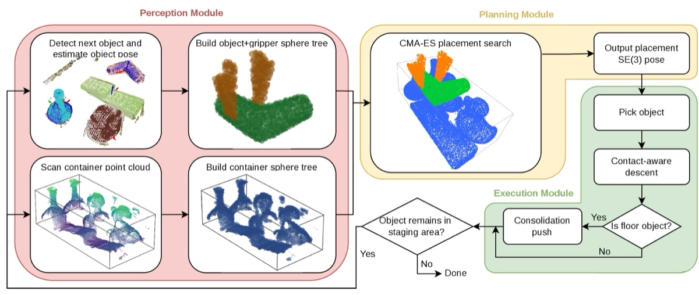
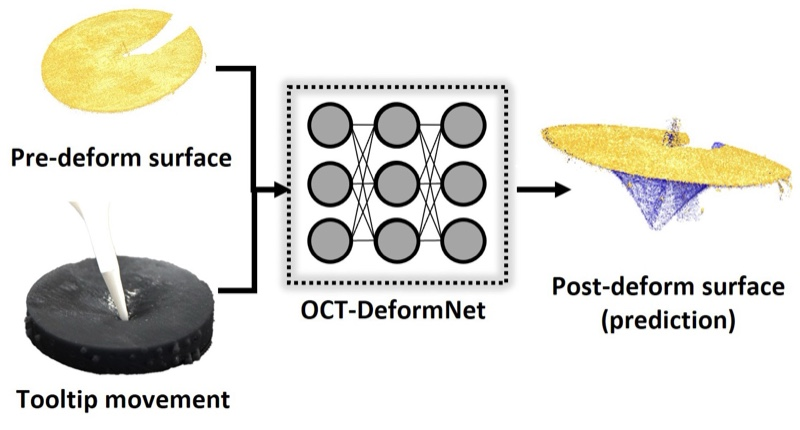

Ph.D. in Robotics Engineering, Worcester Polytechnic Institute
Hi! I'm Tianhao Qin (秦天灏) and I also go by Andy. I'm a second-year Ph.D. student in Robotics Engineering at Worcester Polytechnic Institute, advised by Prof. Jing Xiao. I received my B.S. in Mechanical Engineering from New York University in 2023 and M.S. in Robotics from University of Michigan, Ann Arbor in 2025, where I was advised by Prof. Mark Draelos. My research focuses on data-driven modeling and robotic manipulation, with an emphasis on interactions with deformable objects.

